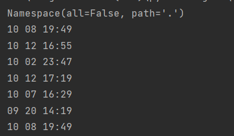

Python模拟ls命令(支持长短选项)
使用Python编写脚本实现ls命令功能，路径缺省为当前路径，支持-l、-a、-h和–all、–human-readable选项。
初步设计思路
应具有的功能
- 命令用法应为： ls [-l] [-h] [-a] [path]
- 最基本的ls显示当前目录文件，-l显示详细信息，-h将文件大小信息转为方便阅读的格式，-a显示隐藏文件，path指定目录
- -h有长选项–human-readable -a有长选项–all
- 路径参数缺省值为当前目录
- 各参数位置顺序无影响
难点是-l选项，需要获取文件各项元数据并按格式排列显示
使用模块提供必要功能
argparse模块：参数分析模块。进行长短选项的参数解析，测试时还可设置传入参数，无需手动传参。
所用方法如下
1 | |
解析器部分参数
1 | |
add_argument部分参数
1 | |
pathlib模块的Path类：从3.4开始Python提供了pathlib模块，使用Path类进行文件和目录的相关操作更加方便。
1 | |
stat模块：将stat()方法取到的元数据mode转化为类型rwx的形式
1 | |
datetime模块：将stat()方法取到的元数据mtime时间戳格式转换为日期
1 | |
实现ls最基础功能
实现ls [path]功能
1 | |
无任何选项执行效果（-h选项被占用，后续需置false）
1 | |
指定目录
实现-a 选项
从上文运行示例可见，由于是在window是环境，以’.’开头的隐藏文件也被打印了出来。可对函数稍作修改使-a选项实现windows和linux一样选择是否打印隐藏文件。
以上文代码为基础，仅作以下修改
1 | |
打印帮助变为
1 | |
测试选项效果
实现-l选项
ll效果如下。可见-l选项需要获取文件的元数据有mode、硬链接数、所属者、所属组、大小、日期、文件名
添加选项
1 | |
以下为新的帮助信息
1 | |
格式转换
以下为stat（）方法取到的元数据，可见与ll显示格式不一致，需要作转换
mode转换
1 | |
测试效果如下
时间转换
1 | |
测试效果如下

修改函数
以上文函数和测试代码为基础进行修改
1 | |
测试效果
实现-h选项
默认显示单位为字节，转换为K、M、G等单位。
添加选项
1 | |
新的帮助信息
1 | |
函数修改
添加转换字节单位函数
1 | |
listdir函数仅作以下修改
1 | |
打印及传参
1 | |
测试效果如下
最终代码附录
1 | |
Windows
Linux
本博客所有文章除特别声明外，均采用 CC BY-SA 4.0 协议 ，转载请注明出处！